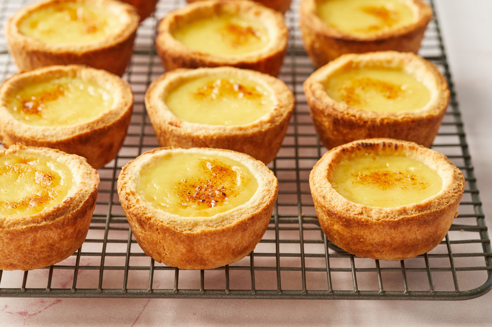

Custard Tart

Sweet and Tasty
A delicious dessert with creamy filling. This recipe is able to make 9 tarts.
Ingredients
Tart Shell
- 2/3 cup softened butter
- 2 tbsp white sugar
- 1 egg yolk
- 1 tsp vanilla extract
- 1 cup flour
Custard Filling
- 3/4 cup milk
- 1/4 cup sugar
- 1 egg
- 1 tsp vanilla extract
- A pinch of salt
Steps
For the tart shell:
Note:Preheat your oven to 170°C (340°F) for 10 minutes before you put the shells in.
- Mix the butter and sugar in a bowl until fully combined.
- Add the egg yolk and vanilla extract, then mix again.
- Mix in the flour until it creates the dough. Make sure to not overmix.
- Put, flatten, and wrap the dough in cling wrap, then chill in the fridge for 30 minutes.
- Separate into nine pieces and fit the dough into the tart molds.
- Prick the base lightly with a fork to make some holes, then put them back into the fridge for 10 minutes.
- Bake for 20 minutes on the lowest rack or until golden brown, then let cool.
For the custard filling:
- Pour the milk in a pot and let it simmer over medium heat. Stir frequently until bubbles form around the edge and it lets out steam.
- Remove from the milk from heat and let it cool down completely.
- In a bowl, whisk the egg then mix in the sugar,salt, and vanilla extract.
- Pour in the milk into the mixture slowly while whisking. Continue whisking until well combined.
For the custard tart:
Note:Preheat your oven to 175°C (350°F) for 10 minutes before you put the tarts in.
- Pour in the custard filling into the tart shells. Be careful to not overfill.
- Bake for 20 minutes. If you're satisfied with the color of the shells but the filling is still underbaked, put foil on top of the shells so it won't change color or get burnt.
- Remove the tarts from the molds and let them cool down. Now they are ready to eat. Enjoy!